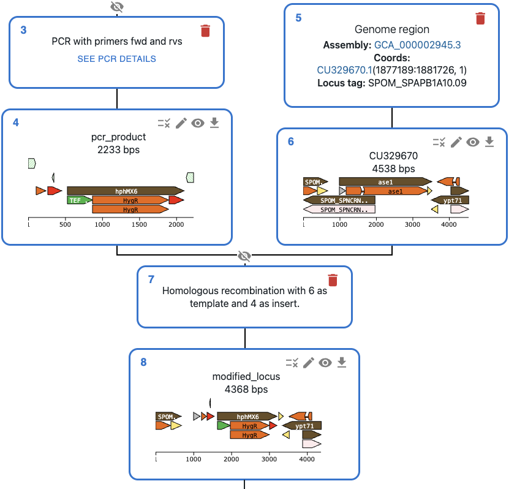

Every method in SnapGene, plus homologous recombination, IVA, CRISPR, phage recombinases and more. Every step is recorded.
Define your syntax once, pick parts from dropdowns and get every combination, documented. Fully scriptable for automation.
Sequences, oligos, strains and sequencing data in one place. Pilot labs wanted.
